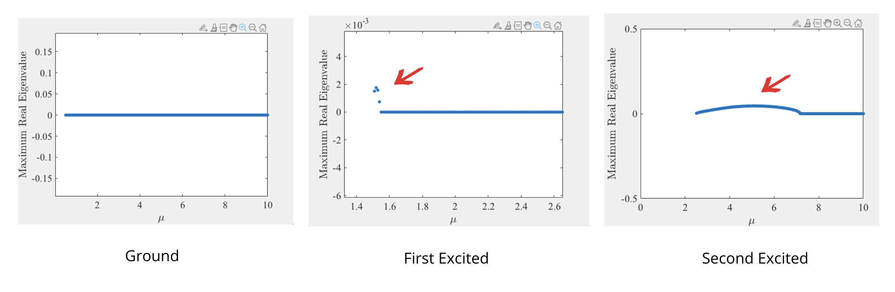

Solving Nonlinear Differential Equation Using Numerical Approaches
Skills: MATLAB, Numerical Analysis
Objectives: Researched the existence, stability, and spatio-temporal dynamics of solutions to the nonlinear Schrödinger Equation. The equation was studied to investigate Bose-Einstein Condensation (BEC) equation, a state of matter in which atoms are cooled down to 0 Kelvin.
Approach:
- Deployed Newton's Methods to find the steady-state solution for various values of n.
- Applied Perturbation Ansatz to see if the solution is stable as n increases. Robustness of the solution can be further explored by considering a random perturbation (for stable solutions) and the most unstable eigendirection (unstable solution).
- Used Time Integrator (RK4 or Fourth-order Runge-Kutta) to evaluate the stability of the solution over time.
Results: For a full detail, please refer to the poster below.